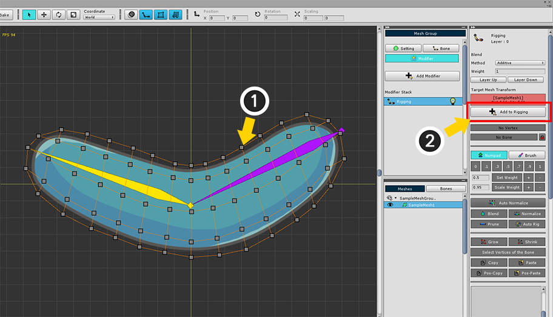
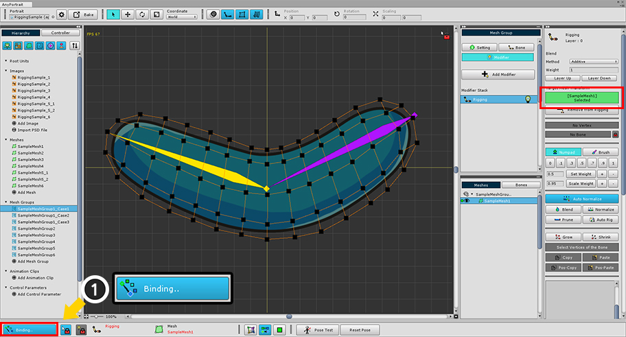
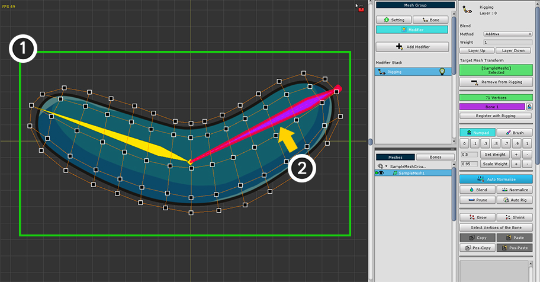
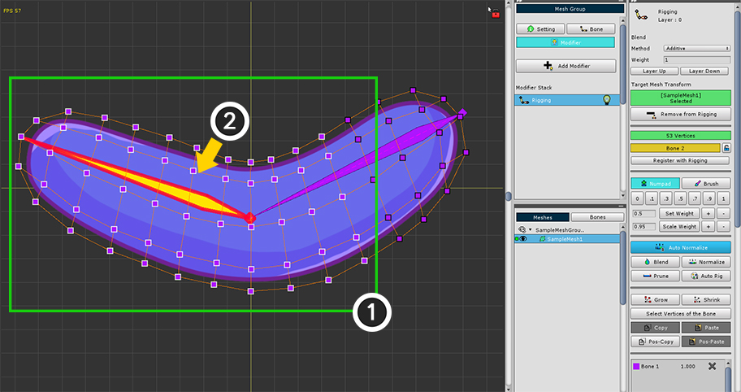
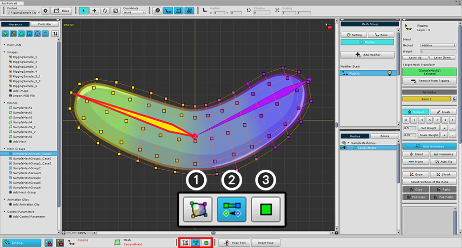
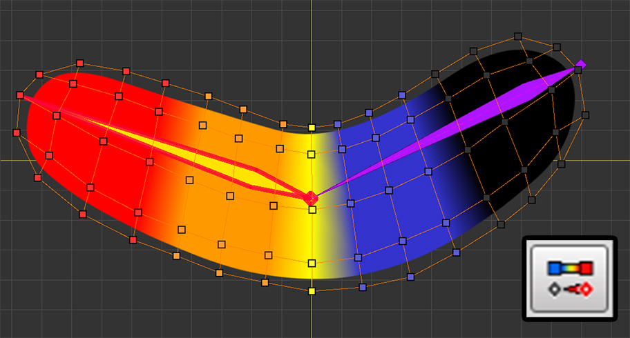
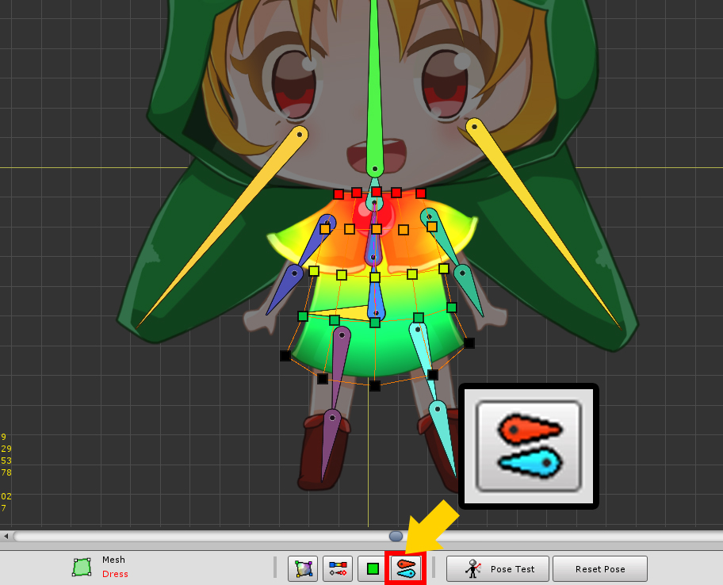
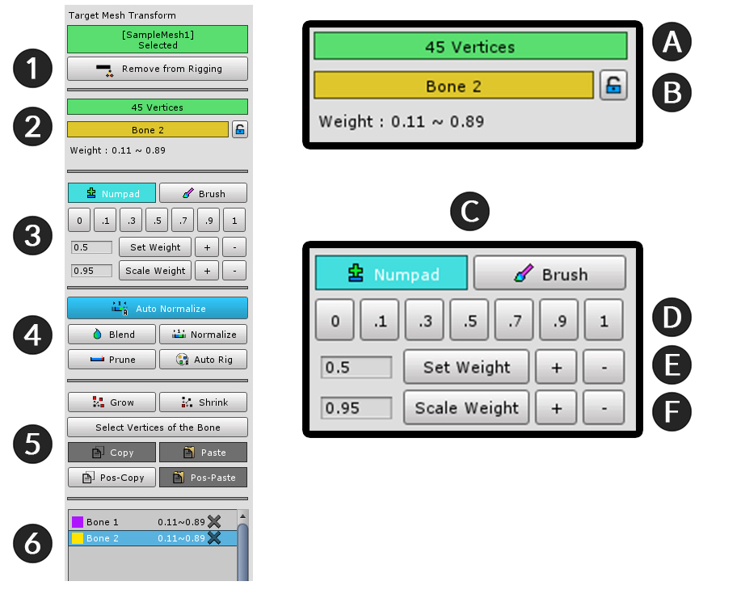
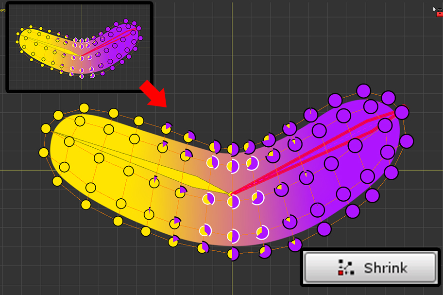

AnyPortrait > マニュアル > リギングモディファイヤ
リギングモディファイヤ
1.2.3
「リギング（Rigging）」は、頂点と骨を接続して、メッシュが動くことができるよう作成するプロセスを指します。
特に、メッシュの頂点と骨を接続するための「重み（Weight）」を設定することがリギングの中核です。
AnyPortraitの「リギングモディファイヤ（Rigging Modifier）」は、リギング作業のためのさまざまな機能を提供しています。
このページでは「リギングモディファイヤ」の基本的な使用方法と機能を紹介します。
このページの内容は、「Getting Started 2」でも扱っています。
様々な場合でのリギングをする方法と、高度な機能については、「次のページ」を参照してください。
リギングモディファイヤを追加して、頂点と骨を接続

メッシュグループを選択して、Modifierタブを選択します。
「Add Modifier」ボタンを押して、 「リグモディファイヤ（Rigging Modifier）」を選択して追加します。

(1) メッシュを選択します。
(2) 「Add to Rigging」ボタンを押してモディファイヤにメッシュを登録します。

メッシュをモディファイヤに登録すると、自動的にリギング編集が開始されます。
もし「編集モード（Binding）」が開始されていない場合 (1) 「Start Binding」ボタンを押して編集を開始します。
（ショートカットキー： A ）

メッシュが選択された状態で、頂点と重みを設定する骨を選択する必要があります。
一度ここですべての頂点に対して重みを付与してみましょう。
(1) マウスをドラッグするか、 Ctrl + A キーを押して、すべての頂点を選択します。
(2) 対象となる骨をクリックします。
選択を解除するときは、マウスの右ボタンをコチラできます。
最初の右ボタンをクリックで頂点の選択が解除され、第二の右ボタンをクリックで、骨の選択が解除されます。

これで、選択頂点と骨を接続してみましょう。
(1) 重みツールで 「1」を押します。
(2) ワークスペースでメッシュの色が骨の色または赤色に変わるのを見ることができます。
（オプションに応じて色が異なります。）
(3) 骨 - リギング情報に選択された骨（Bone 1）と指定された重み（1.0）が追加されたことを見ることができます。

第二の骨と頂点を連結してみましょう。
今度は、いくつかの頂点だけを選択して重みを設定してみましょう。
(1) マウスをドラッグして頂点を選択します。 Ctrl または Shift を押して、頂点をさらに選択することができます。
(2) 第二の骨をクリックして選択します。

関節部位では、骨と骨の互いの重みが少しずつ変わる作ることをお勧め。
現在選択されて頂点には若干の重みだけ指定してあげましょう。
(1) 重みツールで「3」ボタンを押します。
(2) または「+」ボタンを何度押して重みを増加させることができます。
(3) 「Bone 2」のリギング情報が追加されたことを見ることができます。
(4) メッシュの色も第二の骨の色で少し変わります。
参考
ショートカットを利用して重みを変更することができます。
X または Z キーを押すと、0.02ほど重みが増減します。 Shift キーを押し X または Z キーを押すと、0.05ほど重みが増減します。

同じように頂点を選択して、第二の骨の重みを設定します。
以前より第二の骨に近い頂点を選択して、今度は0.5の重みを割り当てます。


続いて頂点を選択して、第二の骨に、より多くの重みを割り当てます。
このように重みが徐々に第二の骨に大きく割り当てられると、関節の動きに応じてメッシュが自然に変形することです。
重みの値を直接設定
リギングモディファイヤは、重みを設定する様々な便利な機能を提供します。
その中で最も基本的な機能は、「重み値を直接設定する」である。
次の方法で簡単に重み値を設定することができます。

(1) 変更したい頂点を選択します。 （対象となる骨が選択された状態である必要があります。）
このとき、重み値を直接設定する方法は二つあります。
もし「選択された頂点が1つの」または「その骨に対して重みがすべて同じであれば」、 (2) スライダを使用して値を変更することができます。
または (3) 重みツールで設定重み値を入力した後、「Set Weight」ボタンを押して重みを割り当てることができます。
リギング情報を削除
重みの値が0または非常に小さい値であるか、誤って適用された場合リギング情報を削除する必要があります。
あえてこの作業がなくてもAnyPortraitはBakeをするときに有効でないリギング情報を削除するので、実際の性能には問題ありません。
しかしながら、多くの骨に対して複雑なリギングを行う場合には、不必要なリギング情報は、あらかじめ削除してください。

(1) 頂点を選択します。
(2) 削除したいリギング情報の「X」ボタンを押します。
(3) リギング情報が削除されたことを見ることができます。
リギング情報出力方式

画面の下部で、リギング情報がワークスペースでどのように表示されるかを変更することができます。
(1) メッシュの画像が重みの色と一緒に出力するかどうかを決定します。
(2) 骨の色が出力されるか、または重みグラデーションが出力されるかどうかを決定します。
(3) 頂点の外形や色を決定します。重みが色で出力されたり、円グラフの方法で出力することができます。

メッシュの画像を見えないようにした状態です。
この方式では、重みの正確な値を視覚的に確認できる利点があります。

重みの色を「骨の色」から「選択された骨の重みグラデーション」に変更しました。
重みが大きくなるほど青で赤に変わります。

頂点出力方式を「円グラフ」方式に変更しました。
この方式では、頂点が円形に出力され、頂点内での重みの割合を正確に見ることができます。
選択された骨のグラフエリアは、少し大きく出力されます。
接続されていない骨を出力する方法
メッシュに接続された骨は、全体の中で一部になります。
特に、骨が非常に多い場合には重みが割り当てられていない骨はリギング作業をしながら、あえて見せれる必要がありません。

画面の下部に骨の出力に関するボタンが追加されています。
このボタンを押して「現在のメッシュと接続されていない骨」をどのように見せるかを3段階に設定することができます。

リギングかどうかに関係なく、すべての骨を示してモードです。

リギングされていない骨を半透明な灰色に表示します。

リギングされていない骨は表示されません。
骨の外形とリギングに関する設定
骨の外形や大きさを変えたり、リギング重みに関連する色、そして頂点のサイズを変えることができます。
「設定ダイアログ」で、さまざまなオプションを利用して、自分に合った作業環境を送ってください！
ポーズテスト
リギングがよく適用されたが、直接テストをするまで知ることは困難です。
キャラクターが様々なポーズをとるように作って、リギング重みを修正する過程を繰り返す必要があります。
AnyPortraitでは、このプロセスを簡単に行うことができるように、編集中のポーズをテストすることができる機能を提供します。

(1) 「Pose Test」ボタンを押すと、リギング編集モードがオンの状態で、骨を動かすことができます。
もう一度ボタンを押すと、元の状態に戻ります。
(2) 「Reset Pose」ボタンを押すと、テストの状態を維持しながら、元の姿勢に復元されます。
ポーズをテスト中にもリギングを行うことができます。
もしポーズテストの直後に骨が動かなければ、他の骨を選択した後再度選択すると移動できます。
リギングツールUI

1. メッシュ登録/解除
: 選択されたメッシュをリギングモディファイヤに登録したり、解除します。
2. 選択された頂点と骨の情報
: リギングの対象となる頂点と骨の情報が出力され、重み値を変更することもできます。
- A. 選択された頂点のインデックスや数
- B. 選択された骨の名前とロックボタン
: リギング値を固定する「ロック機能」をサポートします。 「ロック機能」については、「関連ページ」を参照してください。
3. 重みツール
: 重み値を直接割り当てる機能です。
- C. NumpadタブとBrushタブ
: 「テンキースタイル」で値を割り当てるモードと「ブラシ」を利用して編集することができるモードを切り替えます。
「ブラシモード」については、「関連ページ」を参照してください。
- D. 重み直接設定 : ボタンの値が重みとして指定されます。
- E. Set Weight : 左のボックスの数値を重みに設定します。 「+」ボタン、「-」ボタンを押すと、「0.05」単位で重みを増減します。
- F. Scale Weight : 左のボックスの数だけ重みを乗算します。 「+」ボタン、「-」ボタンを押すと、「1.05」または「0.95」ほど重みを乗算します。
4. 重み補助ツール
: 重みを設定するときに役立つ機能です。
5. 頂点の選択と重みをコピーする
: 頂点を選択する補助機能と重み値をコピーする機能です。
6. リギング情報
: 選択した頂点に関連付けられた骨と重みがリスト形式で出力されます。
リギング補助機能

Blend
選択された頂点の周りのリギング情報に基づいて重みが緩やかに分布されるようになります。
選択された骨を中心に値が分布され、もし選択された骨のリギング情報がない場合は自動的に追加されます。
いくつかの骨を選択したかによってブレンド結果が異なりますので、関節の骨に対してブレンドを実行することをお勧めします。
ボタンを押すたびに少しずつブレンドが処理されます。

Normalize / Auto Normalize
重みの合計が1になるように作成します。
「Auto Normalize」が入っている状態では、常に自動的に重みの合計が1に補正されます。

Prune
0の重み値を持つか、非常に小さな値を持つリギング情報をすべて削除します。
不要なリギング情報を削除する場合に便利です。

Auto Rig
選択された頂点に対して自動的にリギングを実行します。
v1.1.8から、この機能が大幅に改善されました。
詳細については、「関連ページ」を参照してください。

Grow
選択された頂点から少しより多くの頂点を選択します。

Shrink
選択された頂点の外側頂点を除いたより少ない頂点を選択します。

Select Vertices of the Bone
選択された骨に重みが割り当てられているすべての頂点を選択します。
Ctrl （Macでは Command ）を押しながらボタンをクリックすると、既存のに選択された頂点を含む選択します。